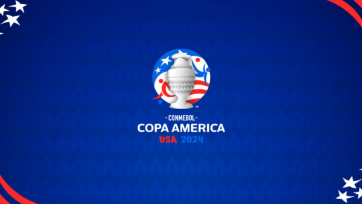

Les plus grandes compétitions
Coupe du Monde
La Coupe du Monde, le plus grand rendez-vous du foot, où les meilleures nations se battent pour être les championnes !
Ligue des Champions
La Ligue des Champions, c'est là où les plus grands clubs d'Europe s'affrontent pour décrocher le titre !
Copa América
La Copa América, c'est l'épreuve reine en Amérique du Sud, avec des matchs électriques et des rivalités fortes !
Les 5 grands Championnats
Les championnats nationaux, c’est là où tout commence, avec chaque équipe qui vise le titre dans son pays ! »
La coupe d'europe (EURO)
L’Euro, c’est l’occasion pour les équipes d’Europe de briller et de nous offrir du spectacle à chaque match !
Coupe d'Afrique des Nations (CAN)
La CAN, le tournoi où le meilleur du football africain se joue avec intensité et passion !